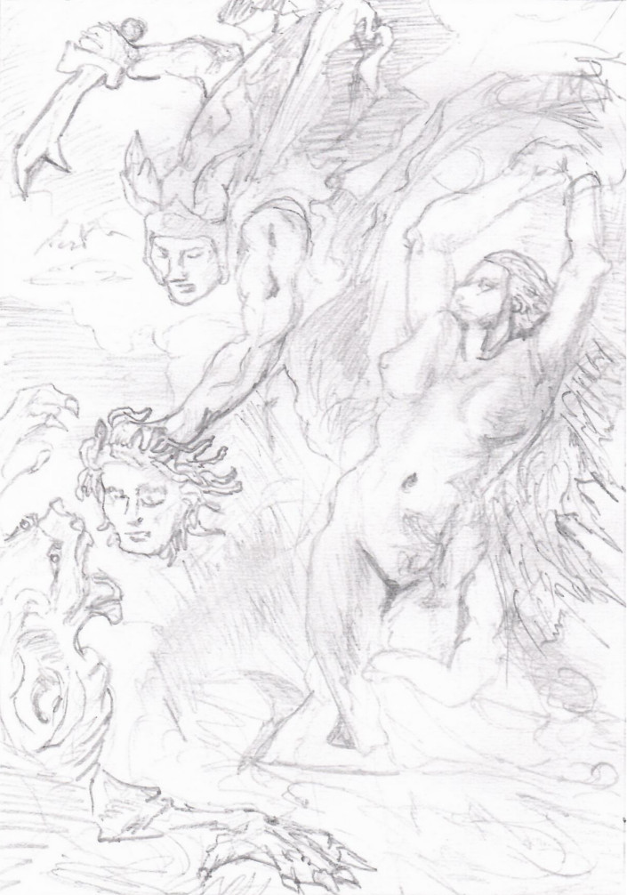

marsacai [at] protonmail [dot] com
I believe that good art should be able to be appreciated by anyone. A person who happens to be there cleaning the building should look over at the wall and see something they can enjoy, just like an art student on a field trip.
This does not involve regressing to kitsch, because a work of art can be seen on multiple levels. Someone can intuitively appreciate beauty, intricate details, or any of the other charicteristics of good art without needing to analyze the artist in a formal way. Then, that same work of art can have its subtleties studied by an "art insider". I would consider myself a failiure if someone wrote a long article interpreting my work but random people walking past the work didn't stop to look at it. Instinct can be superior to intellect!
This isn't saying I'm playing make-believe that I'm in the workshop of a Renaissance master. The fact that I'm a modern person is impossible to avoid and rather than delusionally pretending like I don't live in this era, I'd like to understand my society while also rejecting the harmful forces within it as much as I can. I believe that there are unique particularities available to an individual in every age, and one of the purposes of this project is to the find the particularities available to me in ours.
There are some general contrasts that I take a side on. I believe in the absolute rather than the relativistic, form instead of formlessness, association instead of dissociation, and the transcendental over the purely material. I've been influenced by monumental architecture and the works of M.C. Escher, Jacques-Louis David, Johann Wenzel Peter, and John Blanche. Some contemporary artists whose works I personally find inspiring are Fen De Villiers, Matthew Fall McKenzie, Soey Milk, and Xue Jiye.
